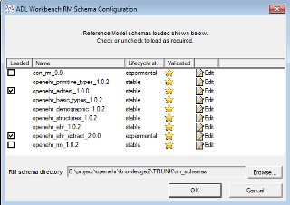
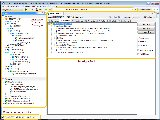

Some Basic Configuration
Setting RM Schemas
You may want to check which Reference Model schemas are enabled initially. Choose RM Schemas > Configure Schemas to do this. The dialog looks as follows.
{kind=link}
You can check all RM schemas that apply to archetypes in any repository you might define. The only time you would leave a schema unchecked is if you have more than one version of the same schema and you want to choose a specific one. Several RM schemas are provided with the AWB, which are copies of the controlled versions found in the openEHR knowledge2 SVN repository. See the Tool Configuration section for details on configuring RM schemas.
Setting and changing repository profiles
The first time you start the tool if you are a new user, you will be asked for a repository. The screen will look like this:
{kind=link}
The repository dialog is used to define the location of a repository of archetypes/templates. The 'profile' is a logical name for a 'reference' repository, and optionally, a 'work' repository. You can create as many profiles as you like. The 'reference' repository is a directory containing archetypes that you will use, but not modify, such as the CKM archetypes, or a national library. These archetypes will be shown with blue icons. The optional 'work' repository is to indicate the directory under which you have archetypes/templates you are working on. The latter can include specialisations of the archetypes found in the reference location. These archetypes will be shown with green icons.
The files in each repository area can be arranged in any manner - e.g. the traditional 'openEHR' structure, or even a single directory. When the files are read by the AWB, they are classified under the class structure of the reference model on which each archetype is based.
New users and anyone wanting to experiment with ADL/AOM 1.5 are advised to follow the setup described here. This is the setup the tool authors most often use!
Using the Tool
Docking
The AWB layout is docking-based, which means that the key components are all dockable 'tools'. This screenshot shows multiple editor tabs, the Catalogue tool, and various minimised tools at the bottom and right hand side. Docking can be used to arrange editor tools side by side, as shown here, and to 'pop' a tool out into an independent window, as shown here.
{kind=link}
{kind=link}
{kind=link}
In general, docking is controlled in the normal way for the platform you are working on, e.g Windows, or the various GUI toolkits used on Linux and MacOS.
General layout
The AWB has two facilities, the archetype compiler/viewer and the 'tester'. The main form shows the compiler/viewer, while the tester is normally minimised to the right. The Viewer looks as follows.
{kind=link}
Archetype and template Catalogue
On the left side of the tool are two explorers, making up the 'Catalogue' tool in AWB. The upper one is used to navigate all archetypes and templates, within the class hierarchy of the reference model on which the archetypes are based. Reference and working repository artefacts are merged in this view, and colourised so that the origin remains visible. The 'show entire ontology' option on the options panel can be used to force all classes in the hierarchy to be shown rather than just those which have archetypes in the current repository. Archetypes that appear below other archetypes are either specialisations, templates or template components. (Remember that the latter artefact types are technically just specialised archetypes.)
{kind=link}
The lower explorer is used exclusively for templates and template components, and shows compositional relationships due to slot-filling, rather than specialisation in its hierarchy. The two explorers are linked, so that choosing an artefact node in the lower one automatically chooses the same artefact in the upper one, allowing its lineage to be visible.
Archetype and Class Tool area
The middle area of the screen is dedicated to viewing archetypes, templates and browsing the reference model. Two types of tool are used for this - the Archetype Tool and the Class Tool. Any number of each tool can be launched. The first Archetype Tool starts just by left clicking on an archetype or template in the Catalogue. New Archetype Tools are launched by right-clicking and selecting 'New Tool' from the context menu. The same applies to starting a Class Tool - just left or right-click on a Class in the Catalogue area.
The Archetype Tool
The Archetype Tool enables a single archetype to be visualised in many ways. In the toolbar, the 'view' controls (to the right of the Archetype id text box) allow selection of differential and flat views. With one of these selected, the notebook tab controls allow viewing of the following aspects of an archetype:

- the Description view: the Administrative and Descriptive meta-data of the archetype, as well as the terminology binding summary;
- the Definition view: a 'node map' visualising the formal definition of the archetype, including various controls on the right side;
- the Paths view: all paths extracted from the archetype, with various controls for fine-tuning the view;
- the Slots view: a two-part view, consisting of:
- the slots in the archetype, with the archetypes from the rest of the repository that match the slot constraints;
- other archetypes whose slots the current archetype can fill;
- the Terminology view: a structured view of the ontology section of the archetype or template, including term bindings and ref set bindings;
- the Annotations view: a structured view of archetype annotations, for those archetypes that include them;
- the ADL view: a view showing the ADL text in either the source differential form or of the generated flat archetype.
The Class Tool
The class tool
Using the ADL Workbench with the Archetype Editor
You can use the ADL Workbench as a convenient way to launch the Archetype Editor on individual archetypes. The AWB provides an easy way to see all archetypes, as well as performing ADL 1.5 validation, not currently available in the Archetype Editor. Firstly, download the Archetype Editor, and then configure it as the editor for archetypes, as described here.
Artefact overview
The ADL Workbench is designed to parse and validate archetypes. Technically speaking, 'archetypes' are any artefact conforming to the openEHR Archetype Definition Language (ADL) and Archetype Object Model (AOM) specifications (see lower part of the specifications page), or the older EN13606-2 specification, which is a snapshot of the openEHR AOM 1.4 specification. The latest ADL 1.5 specification defines 4 logical kinds of artefact. These include three kinds of archetype, and the 'operational template'. The latter is generated from a template, and is used as the basis for all further downstream transformations. The various artefact types and their file formats are shown below.
| Artefact type | Description | Source file type | Flat file type |
| archetype | a theme-based definition of multiple data points/groups, using the archetype constraint formalism | .adls .adl (legacy) |
.adlf |
| template | a use-case specific definition of content, consisting of data items from various archetypes | .adls |
|
| template_component | a component of a template | .adls |
|
| operational_template | the inheritance-flattened form of a template, used as the basis for all further transformations | n⁄a | .opt |